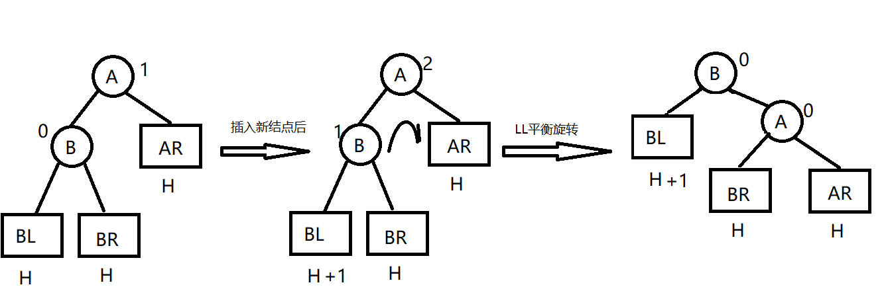
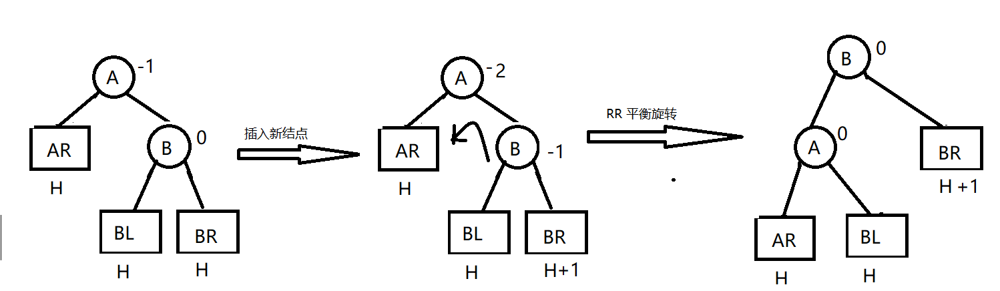
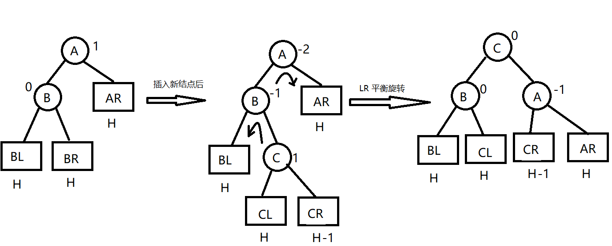
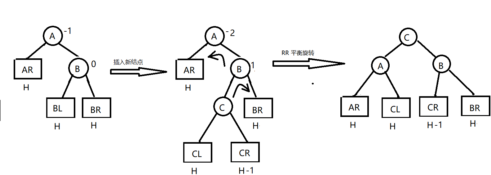

5.5 树和二叉树的应用
5.5.1 二叉排序树（BST）
定义
二叉排序树，也叫二叉查找时，二叉搜索树，可以是一颗空树。具有以下特征：
- 若左子树非空，则左子树上所有结点的值均小于根结点的值。
- 若右子树非空，则右子树上的所有结点的值均大于根结点的值。
- 左右子树也分别是一颗二叉排序树。
对其进行中序遍历，变得到一个有序的序列。

对上图进行中序遍历就是： 1 2 3 4 5 6
二叉排序树的查找
比如查找 3，根据上面定义的规则，从树根开始查找，先和根结点进行比较，发现数据 3 比 4 小，则移动指针下沉到根结点的左孩子，然后和数据为 2的结点进行比较，发现，3 比 2 大，所以结点数据为 2 的结点下沉到其右孩子，和 3 比较，发现相等，这样就找到了。
代码实现：
// 二叉搜索树的搜索方式
template<class t>
TreeNode<t>* search_key(TreeNode<t>* root, t key)
{
TreeNode<t>* current = root;
while (current && current->Data != key)
{
if (current->Data > key)
current = current->rChild;
else
current = current->lChild;
}
return current;
}
二叉排序树的插入
template<class t>
TreeNode<t>* search_father(TreeNode<t>* root, t key)
{
TreeNode<t>* father = nullptr;
TreeNode<t>* current = root;
while (current && current->Data != key)
{
if (current->Data < key)
{
father = current;
current = current->rChild;
}
else
{
father = current;
current = current->lChild;
}
}
return father;
}
template<class t>
int GetChildrenNum(TreeNode<t>* root)
{
if (root->lChild && root->rChild) // 左右孩子都存在
return 2;
if (root->lChild == nullptr && root->rChild == nullptr) // 叶子结点
return 0;
return 1;
}
// 中序遍历中查找当前结点的后继结点
template<class t>
TreeNode<t>* FindInOrderNext(TreeNode<t>* current)
{
// 中序遍历的结点的后继肯定在右子树
TreeNode<t>* exist = current->rChild;
if (exist == nullptr) // 没有后继
return nullptr;
TreeNode<t>* next = nullptr; // 指向后继结点
while (exist)
{
if (exist) // 一路向左
{
next = exist;
exist = exist->lChild;
}
else {
return next;
}
}
return next;
}
二叉排序树的删除
// 二叉树的删除
template<class t>
TreeNode* deleteNode(TreeNode* root, T key) {
// 此时 rootCache 就是要删除的点
if (root == nullptr)
return root;
TreeNode* dNode = root;
TreeNode* father = root; // 待删除结点的父结点
TreeNode* child = nullptr;
int state = 0; // state =0 表示 child 是 左孩子，state = 1 child表示 father 右孩子
// 找到删除结点
while (dNode != nullptr)
{
if (dNode->val == key)
{
break;
}
else if (dNode->val > key) // 在左子树找
{
if (dNode->left == nullptr) // 树中不存在key
return root;
father = dNode;
dNode = dNode->left;
state = 0;
}
else { // 在右子树中找
if (dNode->right == nullptr)
return root;
father = dNode;
dNode = dNode->right;
state = 1;
}
}
// 核心部分，不断循环，直到dNode指向叶结点，father指向叶结点的父亲结点
while (dNode->left != nullptr || dNode->right != nullptr)
{
if (dNode->left != nullptr)
{
father = dNode;
child = father->left;
state = 0;
while (child != nullptr && child->right != nullptr) // 找到顶替结点
{
father = child;
child = child->right;
state = 1;
}
dNode->val = child->val; // 替换key
dNode = child;
}
else // dNote->left为空，现在对dNote->right 中找出最小值
{
father = dNode;
child = father->right;
state = 1;
while (child != nullptr && child->left != nullptr) // 找到顶替结点
{
father = child;
child = child->left;
state = 0;
}
if (dNode && child)
{
dNode->val = child->val;
dNode = child;
}
}
}
// 说明root 只有一个结点
if (dNode == father) {
delete root;
root = nullptr;
return root;
}
// 此时 child 是最后一个叶子顶替结点X，father 是X 的父结点
if (state)
{
if (father && father->right)
{
delete father->right;
}
father->right = nullptr;
}
else
{
if (father && father->left)
{
delete father->left;
}
father->left = nullptr;
}
return root;
}
};
5.5.2 平衡二叉树
定义
为避免树的高度增长过快，引起二叉排序树的性能降低，规定在插入和删除二叉树结点时，要保证任意结点的左、右子树高度差的绝对值不超过1，称为平衡二叉树。（BBT）
平衡因子：左子树和右子树的高度差。
平衡二叉树的插入
二叉排序树保证平衡的基本思想如下：每当在二叉排序树中插入（或删除）一个结点时，首先检查其插入路径上的结点是否因为此操作而导致了不平衡。若导致不平衡，则先找到插入路径上离插入结点最近的平衡因子的绝对值大于1的结点A，再对以A为根的子树，在保证二叉排序树特性的前提下，调整各结点的位置。
LL 平衡旋转
情况：在结点A的左孩子的左子树上插入了新结点，单重A的平衡因子由1变成了2。
方法：将A的左孩子B由右上旋转代替A称为根结点，将A结点向右下旋转称为B的右子树的根结点，而B的原右子树则作为A结点的左子树。

RR 平衡旋转
情况：由于在结点A的右孩子的右子树上插入了新结点，A的平衡因子由-1变为-2，导致以A为根的子树失去平衡，需要一次向左的旋转操作。
解决：将A的右孩子B向左上旋转代替A称为根结点，将结点A向左下旋转成B的左子树的根结点，而B的原左子树则作为A结点的右子树。

LR 平衡旋转
情况：由于在A的左孩子的右子树上插入新结点，A的平衡因子由1变为2，导致以A为根结点的子树失去平衡。
解决：先将A结点的左孩子B的右子树的根结点C向左上旋转提升到B结点的位置，再把该C结点向右上旋转提升到A结点的位置。

RL 平衡旋转
情况：由于在A的右孩子的左子树上插入新结点，A的平衡因子由-1变为-2，导致以A为根的子树失去平衡。
解决：先将A的右孩子B的左子树的根结点C向右上旋转提升到B结点位置，然后把C结点向左上旋提升到A的位置。

5.5.3 哈夫曼树和哈夫曼编码
定义
从树根到任意结点的路径长度（经过的边数）与该结点权值的乘积称为该结点的带权路径长度。
树中所有结点的带权路径长度之和称为该树的带权路径长度。
其他略。（待补充）